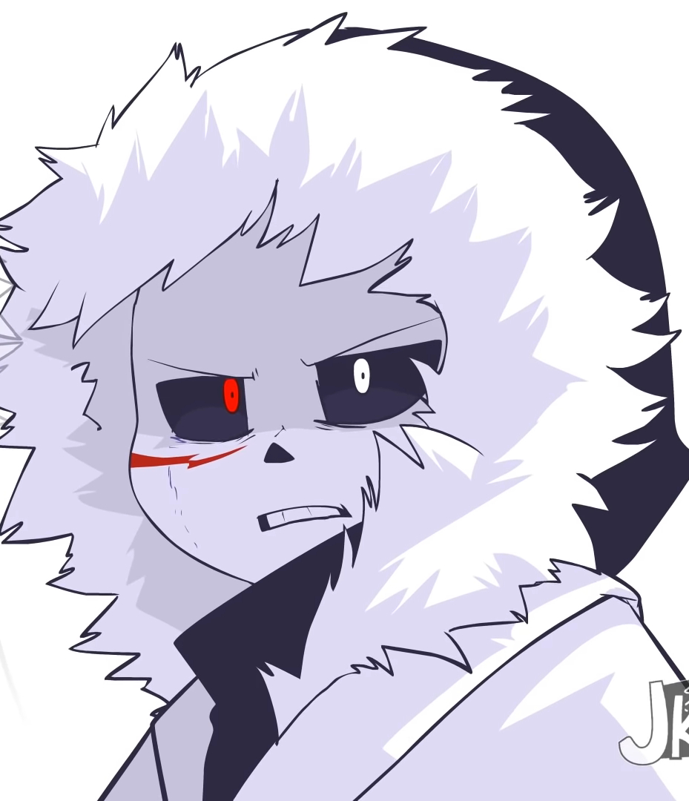

Undertale is a 2D role-playing video game created by indie developer Toby Fox. The player controls a child who has fallen into the Underground: a large, secluded region under the surface of the Earth, separated by a magic barrier. The player meets various monsters during the journey back to the surface. Some monsters might engage the player in a fight. The combat system involves the player navigating through mini-bullet hell attacks by the opponent.
They can opt to pacify or subdue monsters in order to spare them instead of killing them. These choices affect the game, with the dialogue, characters, and story changing based on outcomes. Outside of some artwork, Fox developed the entirety of the game by himself, including the script and music. The game took inspiration from several sources, including the Brandish, Mario & Luigi, and Mother role-playing series, bullet hell shooter series Touhou Project, role-playing game Moon: Remix RPG Adventure, and British comedy show Mr. Bean.
Originally, Undertale was meant to be two hours in length and was set to be released in mid-2014. However, development was delayed over the next three years. The game was released for Microsoft Windows and OS X in September 2015. It was also ported to Linux in July 2016, PlayStation 4 and PlayStation Vita in August 2017, and the Nintendo Switch in September 2018
It was also ported to Linux in July 2016, PlayStation 4 and PlayStation Vita in August 2017, and the Nintendo Switch in September 2018. The game was acclaimed for its thematic material, intuitive combat system, musical score, originality, story, dialogue, and characters. The game sold over one million copies and was nominated for multiple accolades and awards. Several gaming publications and conventions listed Undertale as game of the year. The first chapter of a related game, Deltarune, was released in October 2018.
Don't know why... But a lot of people love this game. Who knows. You may love it too.
Undertale Community has made a lot of videos. Here are some videos I just love to watch!
Undertale Alternate Universes, or "AUs", are alterations to the story, world, and/or characters of Undertale, be it crossovers, changes in aesthetic, or role-swaps. "AU" is an umbrella term that includes "ATs".

X-Tale is an AU created by Jakei95 on Tumblr and Youtube. X-Tale is fractured into many parts: the comic, the animation series Underverse, another comic named The Truce, which is the precursor to X-Tale, and another animation series about the ten different timeline

Glitchtale is an AU created by Camila Cuevas. Though it started as a short animation based on the famous genocide battle with Sans, it became popular enough that Camila decided to make a series out of it. The AU starts when Frisk resets during the Sans fight, which causes glitches to happen and for Chara to return
Here Are Some Reviews
Undertale is a great game and I love it! The story is very nice and the music is really good. It makes you feel happy, sad, cry and laugh. Thanks Toby!

Undertale is one of the most beloved Indie game in the world, with a deep history and full of charismatic characters.
A reason I love this game is because it can touch anyone's heart. I've only seen my dad cry very few times in his life. Once over his deceased mother, once over his deceased step-father and, lastly, every March 22nd, my brother's birthday. Not once over fiction.